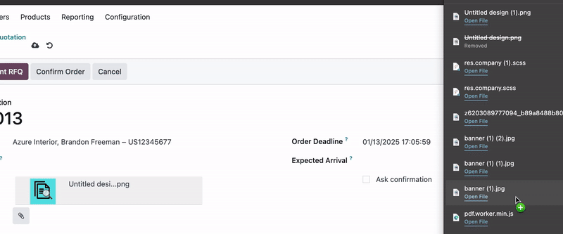

This M2M Attachment field widget is designed for use in your Odoo application. It allows users to attach multiple files to a record by dragging and dropping them into the field. The selected files are then stored in the field for later use, and users can preview the attachments (img and PDF types) directly within the field.
The widget is linked to a Many2many field connect with ir.attachmentmodel with the widget property set to draggable_m2m_attachment_field.
ir.attachment model.
widget="draggable_m2m_attachment_field" to the
Many2many field in your form view.
